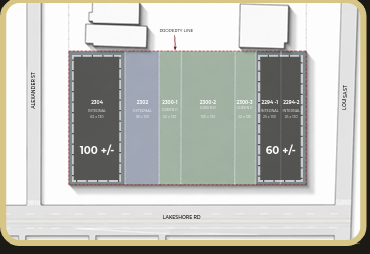
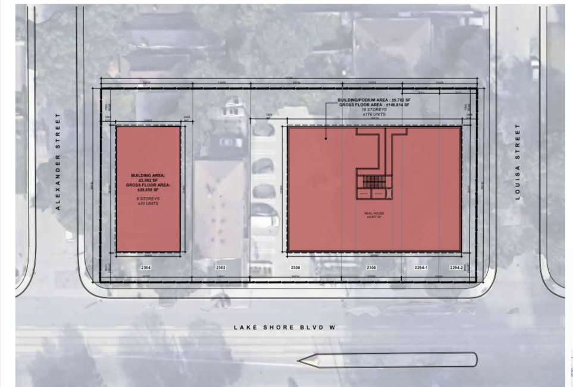
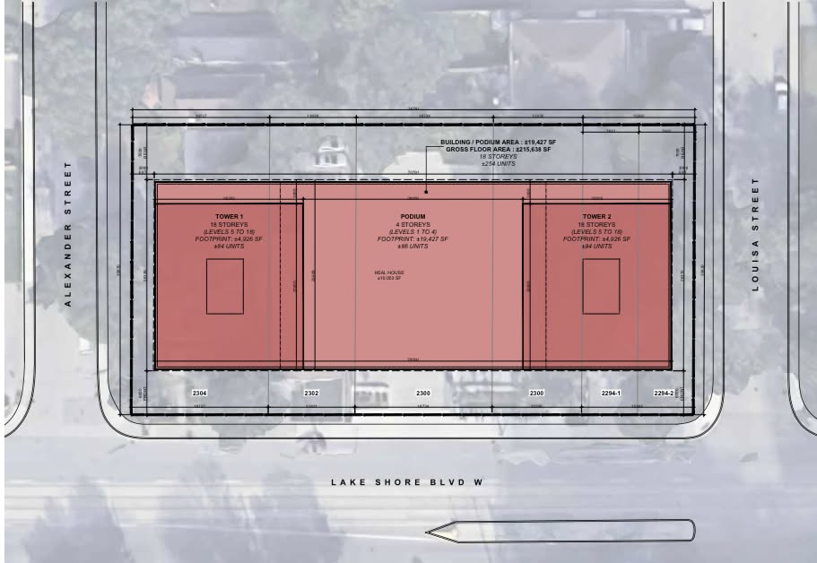

City of Toronto Staff Briefing
A short briefing deck for internal City review.
Heal House is asking the City to support a pathway for the Green P parcel to become part of a broader affordable housing and community-wellness solution, delivered with a non-profit partner and clear public-benefit protections.
The Opportunity
The Green P lands sit inside a larger Lakeshore opportunity. On their own, they serve a narrow civic function. As part of the Heal House assembly, they can become affordable housing, wellness infrastructure, and a permanent neighbourhood benefit.
Baseline path using the two corner parcels only.

Green P is integrated into a stronger affordable housing and community-benefit path.

The complete-site scenario produces the clearest measurable affordable housing outcome.

The Proposal
This is a public-benefit proposal. The Green P transfer, lease, disposition, or partnership pathway should be evaluated through the affordable housing outcome Toronto wants delivered — with Heal House assembling the site and a non-profit partner stewarding affordability.
This briefing does not ask staff to pre-approve a transaction. It asks staff to identify the appropriate City pathway for evaluating whether Green P can be converted into a measurable affordable housing and community-benefit outcome.
Why It Fits Toronto
More affordable homes, stronger long-term property-tax revenue, public land value converted into public benefit, and community-serving uses at grade.
Lead the site vision, coordinate the land pathway, and partner with a non-profit to deliver affordability.
The Land Exchange Logic
The City can treat Green P as both a public-benefit and revenue lever. Rather than viewing the parcel only as a parking asset, staff can evaluate the appropriate process for converting underused land into affordable housing, wellness services, long-term tax generation, and a stronger complete-community outcome.
Defines the land pathway and public-benefit conditions.
Secures the parcel and integrates it into the complete-site plan.
Delivers and stewards the affordable housing commitment.
Public Protections
The Short Story
Toronto can turn a parking parcel into affordable homes by creating a clear process for Heal House to integrate Green P into the complete site and deliver affordability through a non-profit partner.